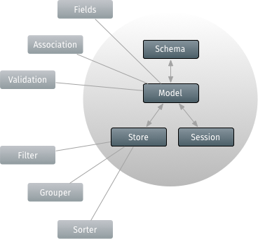
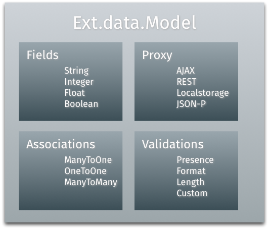

数据封装是用于加载和保存应用的所有数据的.数据封装包含大量的类,但其中有三个比其它的类更为重要..
这三个类是:
上面的这三个类几乎在每个应用中都用到.它们由一些卫星类来支持着.

数据模型(Models)
数据封装的中心部分是Ext.data.Model类. 数据模型在应用中代表一个数据实体.例如,一个电子商务应用中会需要一个用户、产品和订单和其它等等的数据模型.简单来说,一个数据模模型定义了一套字段和业务逻辑关系.
我们看一下数据模型中的一些主要部件:

创建数据模型(Model)
通常最好的做法是从一个通用的基类开始定义数据模型(Models). 基类允许你在一个地方简单的配置模型的某些方面.这也是配置模式的好地方.模式是你应用中所有数据模型(Models)的管理器. 现在我们将聚焦二个最有用的配置选项:
Ext.define('MyApp.model.Base', {
extend: 'Ext.data.Model',
fields: [{
name: 'id',
type: 'int'
}],
schema: {
namespace: 'MyApp.model', // generate auto entityName
proxy: { // Ext.util.ObjectTemplate
type: 'ajax',
url: '{entityName}.json',
reader: {
type: 'json',
rootProperty: '{entityName:lowercase}'
}
}
}
});数据模型基类的合适内容,特别是它的 “fields”,在不同应用中可能不同.
数据代理
数据代理由数据模型(Models)和数据存储(Store) 用于处理加载和保存模型的数据. 数据代理有二种类型: 客户端和服务端.
数据代理可以直接定义在数据模型的基类的模式上(像上面所看到的一样).
客户端数据代理
客户端 数据代理的例子包含内存和本地存储, 这些使用 HTML5 的本地存储特性. 尽管老的浏览器并不支持这些新的 HTML5 API, 但这些特性这么有用，很多的应用将从这些表现中获得巨大的好处.
服务端数据代理
服务端 数据代理处理远端服务器上的整合数据.这种类型的数据代理包含 AJAX, JSONP 和 REST.
模式
模式 是一系列互相有数据关联关系的实体. 当一个数据模型定义了一个 “schema” 的配置,这个模式将所有派生的数据模型(Models)继承. 在上面的例子中,模式配置了建立这个模式下二个变量在所有数据模型中的默认值.
配置中的第一个是 “namespace”. 通过设定所有数据模型的名字空间获得一个缩写的名字叫做“entityName”. 这个短的名字主要用于当我们后面要看到的数据关联和数据模型的定时..
这个例子的模式中也定义了一个 “proxy” 配置. 这是一个类似基于 Ext.XTemplate 神经元模版. 差别是当给与数据时对象模版将产生对象. 在这个例子中,数据用于自动定义那些没有显示定义一个代理的数据模型"proxy"的定义配置.
因为每个数据模型将以相同的方式加载差异较小的不同数据值,这样就非常有用. 这样避免了为每一个数据模型重复定义数据代理.
在URL 定义的 User.json, url: '{entityName}.json', 必须返回一个 JSON 字符串.
在这个例子中我们像这样使用:
{
"success": "true",
"user": [
{
"id": 1,
"name": "Philip J. Fry"
},
{
"id": 2,
"name": "Hubert Farnsworth"
},
{
"id": 3,
"name": "Turanga Leela"
},
{
"id": 4,
"name": "Amy Wong"
}
]
}数据存储
数据模型(Models)通常用于数据存储(Store), 数据存储一般是一些记录的集合 ( 数据模型派生类的实例).创建一个数据存储和加载数据很简单:
var store = new Ext.data.Store ({
model: 'MyApp.model.User'
});
store.load({
callback:function(){
var first_name = this.first().get('name');
console.log(first_name);
}
});我们手动加载数据存储来接收一批 MyApp.model.User 记录中的数据. 当数据存储的load的回调函数被触发时输出到日志(待完成).
内置数据
数据存储也能加载内置数据. 本质上讲,数据存储将我们传过来的对象转换成合适的数据模型类型的数据:
new Ext.data.Store({
model: 'MyApp.model.User',
data: [{
id: 1,
name: "Philip J. Fry"
},{
id: 2,
name: "Hubert Farnsworth"
},{
id: 3,
name: "Turanga Leela"
},{
id: 4,
name: "Amy Wong"
}]
});数据排序和分组
数据存储能在本地或远程进行数据排序、过滤和分组.
new Ext.data.Store({
model: 'MyApp.model.User',
sorters: ['name','id'],
filters: {
property: 'name',
value : 'Philip J. Fry'
}
});在这个数据存储中,数据将会首先按name排序,然后是按id排序.数据将会过滤到只剩下名字为‘Philip J. Fry’的用户. 通过调用数据存储的 API,可以很简单的在任何时候修改这些项目的属性.
数据关联
数据模型(Models)通过关联API可以联系在一起.大多数应用处理许多不同的数据模型而这些数据模型几乎总是相互关联的.一个博客应用可能有用户和提交文章的数据模型.每个用户创建博客.那么在这个例子中,一个用户能有多个博客,但是一个博客只有一个用户创建了它.这是大家熟知的一个多对一关系.我们可以像这样表示这个关系:
Ext.define('MyApp.model.User', {
extend: 'MyApp.model.Base',
fields: [{
name: 'name',
type: 'string'
}]
});
Ext.define('MyApp.model.Post', {
extend: 'MyApp.model.Base',
fields: [{
name: 'userId',
reference: 'User', // the entityName for MyApp.model.User
type: 'int'
}, {
name: 'title',
type: 'string'
}]
});可以很简单的表达你应用中不同数据模型间的关系.每个数据模型可以与其它数据模型有任意数量的关系.Each Model can have any number of associations with other 数据模型(Models). 此外,你的数据模型(Models)可以以任意顺序定义.一旦你有一行这个数据模型类型的记录,可以很容易的遍历它的关联数据. 例如,如果你要获得一个用户所有的博客,你可以像这样来处理:
// Loads User with ID 1 and related posts and comments
// using User's Proxy
MyApp.model.User.load(1, {
callback: function(user) {
console.log('User: ' + user.get('name'));
user.posts(function(posts){
posts.each(function(post) {
console.log('Post: ' + post.get('title'));
});
});
}
});上面的关系结果集通过一个新的函数加到了数据模型中.每一个用户数据模型有多个通过我们使用的 user.posts() 函数来获得的发布的博客. 通过调用 user.posts() 返回一个在发布的博客数据模型中配置的数据存储.
关联关系不只是在加载数据时有用.它们在创建记录时也相当有用.
user.posts().add({
userId: 1,
title: 'Post 10'
});
user.posts().sync();这个实例,一个新的发发布博客Post, 在它的userId字段中自动赋值了 User(用户) 对像中的id字段中的值. 调用 sync() 方法通过它自己的代理保存这条新的博客 (最终定义在模式的代理配置中). 如果需要在操作完成后获得提醒,这是一个你可以调用回调函数的异步操作.
“反转”(inverse)关系也可以在 Post(发布博客) 数据模型上生成一个新的方法.
MyApp.model.Post.load(1, {
callback: function(post) {
post.getUser(function(user) {
console.log('Got user from post: ' + user.get('name'));
});
}
});
MyApp.model.Post.load(2, {
callback: function(post) {
post.setUser(100);
}
});这个数据加载函数, getUser(), 是一个异步调用并且需要一回调函数来获得用户实例. 这个 setUser() 方法简单的更新 userId (有时候叫做 “外键”) 为 100 并且保存 Post(发布博客) 数据模型. 通常来讲，当数据保存操作完成后,不管保存成功与否,回调函数都会被触发调用.
加载嵌套数据
当关联关系被定义后,通过一条简单的请求,在加载一条记录时能够同时加载相关联的记录. 例如,考虑一个像下面一样的服务器响应:
{
"success": true,
"user": [{
"id": 1,
"name": "Philip J. Fry",
"posts": [{
"title": "Post 1"
},{
"title": "Post 2"
},{
"title": "Post 3"
}]
}]
}框架能够像上面演示的一样通过一个简单的响应自动的解析出嵌套数据. 我们能通过一个简单的服务器响应返回所有的数据，而不是调用一个请求获取用户数据而另一个请求获取博客数据.
数据校验
数据模型(Models)也提供了一些校验数据的支持. 为演示, 我们准备用我们上面的例子来构建. 首先我们增加一些数据校验到用户(User)数据模型上:
Ext.define('MyApp.model.User', {
extend: 'Ext.data.Model',
fields: ...,
validators: {
name: [
'presence',
{ type: 'length', min: 7 },
{ type: 'exclusion', list: ['Bender'] }
]
}
});校验器定义为一个定义在一个有效的字段上的映射关系字段名上的一个对象.这些规则表示为一个校验器对象配置或者是一组配置. 我们例子中的校验器,校验name字段,这个字段长度上至少要有7个字符,并且这个字段的值不能为"Bender".
一些数据校验提供一些特别的可选的配置 - 例如长度校验可以设置最小和最大属性, 按匹配器进行格式化,等等. 在 Ext JS 中有5个校验,同时增加定制化的校验也很容易.
首先, 我们来看一下这些已经构建好了的:
- Presence - 确保字段有值.0值认为是一个有效值但空的字符串无效.
- Length - 确保一个字符串有一个最小和最大的长度.二者都是可选的.
- Format - 确保一个字符串符合指定的表达式格式.在上面的例子中我们确保age(年龄)字段只包含数字.
- Inclusion - 确保字段的值在一定指定的值列表中 (例如.确保性别只是男或女).
- Exclusion - 确保一个值不在某一个指定的值列表中 (例如.把用户名'admin'置为用户黑名单).
现在我们理解了不同的规则校验., 那我们在用户User实例上来使用下. 我们来创建一个用户并且运行它上面的校验,注意其中任何的失败错误:
// now lets try to create a new user with as many validation
// errors as we can
var newUser = new MyApp.model.User({
id: 10,
name: 'Bender'
});
// run some validation on the new user we just created
console.log('Is User valid?', newUser.isValid());
//returns 'false' as there were validation errors
var errors = newUser.getValidation(),
error = errors.get('name');
console.log("Error is: " + error);这里有一个关键函数是 getValidation(), 这个函数将运行所有已配置的校验规则,并且返回对每一个字段首次出现错误的记录或一个对有效字段校验的布尔值.校验记录是延迟创建只有在请求时被更新.
在这里,第一个错误告诉我们:在名字字段上 “长度必须大于” .
那我们提供一个包含7个字符以上的名字看看.
newUser.set('name', 'Bender Bending Rodriguez');
errors = newUser.getValidation();这条用户记录现在通过了所有校验.这条记录存在,它有超过7个字符的长度,并且名字与Bender不同.
newUser.isValid() 现在返回 true. 当我们调用 getValidation(), 校验记录会被更新并且不再是无意义的,并且所有的字段都会被设置为true.